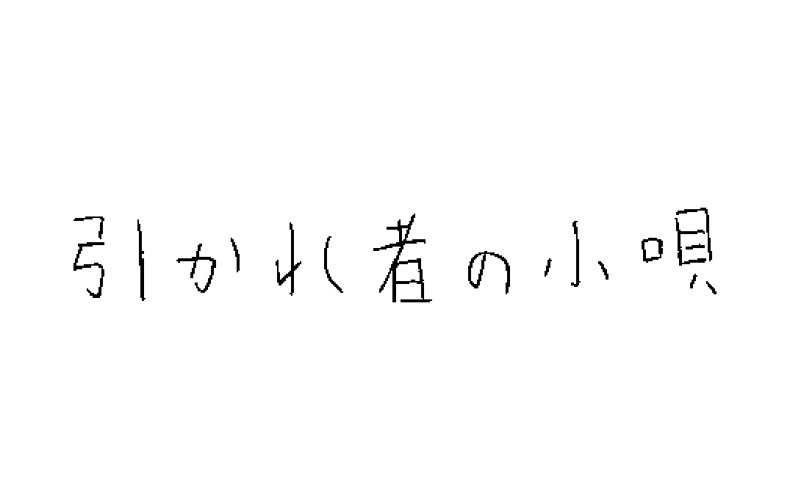

令和元年12月20日に考えたこと
理屈に頼り過ぎず感覚も大事にする
ニッカオフィスのウチヤマケンイチです。
物事を考えるとき、あわせてその理由もセットで考える癖が僕にはあります。
思いつきの意見じゃなくて、きちんとロジカルに話を組み立てることは仕事ではとても重要で、理由とセットで思考する癖。訓練して身につけたわけです。
ただ最近、そんなふうに理由に囚われてばかりいると、思考が狭まってしまうというか、なんとも窮屈な感じを覚えるようになりました。
直感で思いついた案があっても、理由がつけられないからとその案を捨てる。本当にこれで良いのでしょうか。
例えば、飲食店を始めたいとか、日本一周したいとか。そんなふうになんとなく思いついたことはあっても、ではそれをやる合理的な理由は？と聞かれると、答えられなかったり。
であればそれらはやるべきでないのかというと、それはそれで違う気もするのです。
プライベートはもちろん、仕事についてもある程度は感覚で進めてしまうことも必要なのかもしれない。
ロジカルと感覚のどっちが正しいというよりも、ロジカルには説明できないことも結構あるんじゃないかということ。いや説明しようとすればできるのかもしれないけれど、時間がかかってしまうし、その間に鮮度も落ちてしまうのかなと、そう思うのです。
思考の鮮度。生きている考えというのは、一本釣りのように突然現れるものなのかもしれません。
理屈に頼り過ぎず感覚も大事にする。きっとそういうターンもあるものさ。
ウチヤマ ケンイチ
